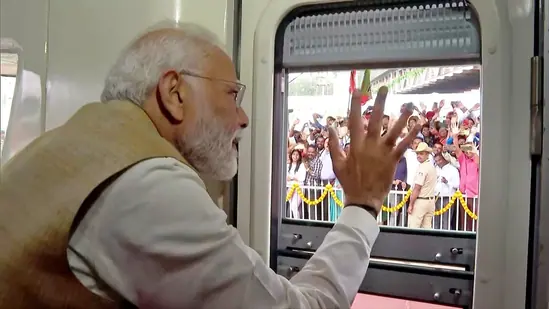
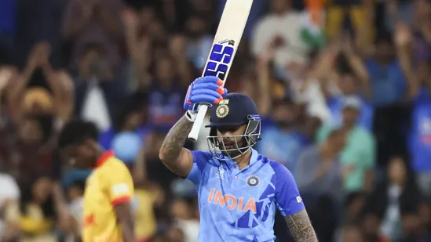
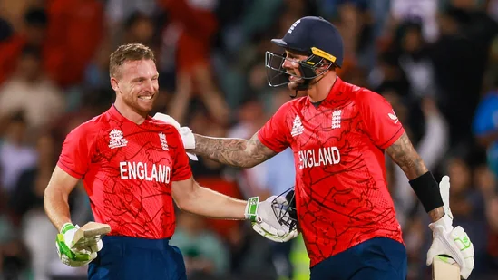
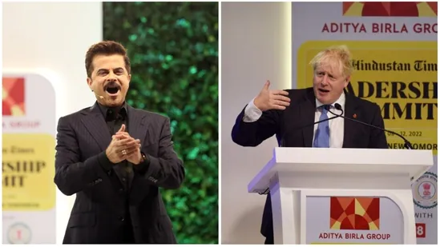

Prime Minister Narendra Modi on Friday inaugurated the terminal-2 of Kempegowda International Airport (KIA) in Karnataka's Bengaluru. He also flagged off south India's first Vande Bharat Express from the city's Krantiveera Sangolli Railway (KSR) station. The train connects Mysuru and Chennai via Bengaluru.

Weeks after Arvind Kejriwal's comments - on including photographs of Hindu Goddess Lakshmi and Lord Ganesha on currency notes - sparked controversy, the Delhi Chief Minister recalled what he meant. In the final session of the five days long HT Leadership Summit 2022, Kejriwal on Saturday stressed that "blessings are needed to reap fruitful results". "We are just mere living beings. We put in a lot of efforts. But at times, we don't get results," the Aam Aadmi Party (AAP) chief said, speaking at the HTLS 2022. "So we need hard work, yes, for what we seek. And we need God's blessings too. That's all I had said."
Former India batting coach Sanjay Bangar has lauded the star batter for his splendid performance in the T20 World Cup. He has predicted that Suryakumar will revolutionise Indian T20 cricket and Team India needs more multi-dimensional players like him.
Alex Hales and Jos Buttler led England to an emphatic 10-wicket win, chasing down a target of 169 and booked a place for themselves in the final where they will face Pakistan.
Former UK prime minister Boris Johnson, actor-filmmaker George Clooney, Sachin Tendulkar, among others are our international guests today at the HTLS 2022.
